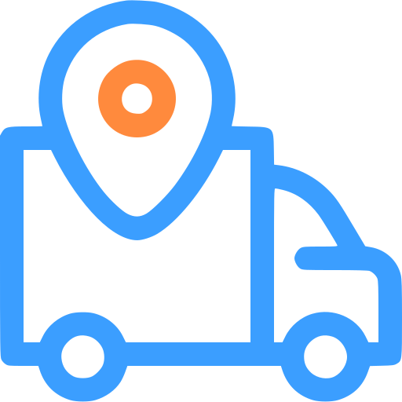

Truck DashOverlay for OBS
Your speed, the next turn and your trip on stream, over the game. Free, like the rest of Truck Dash.
Type the pairing code from the Truck Dash tray icon to get your link.
- In OBS, under Sources, press + and choose Browser.
- Paste the link in URL, with width {w} and height {h}.
- Drag it where you want it over the game. It shows up only while you drive: with the game paused or closed it disappears from the stream.
The link carries your pairing code: whoever has it sees your telemetry. Keep it out of the stream and the chat, and use New code in the client if it leaks.